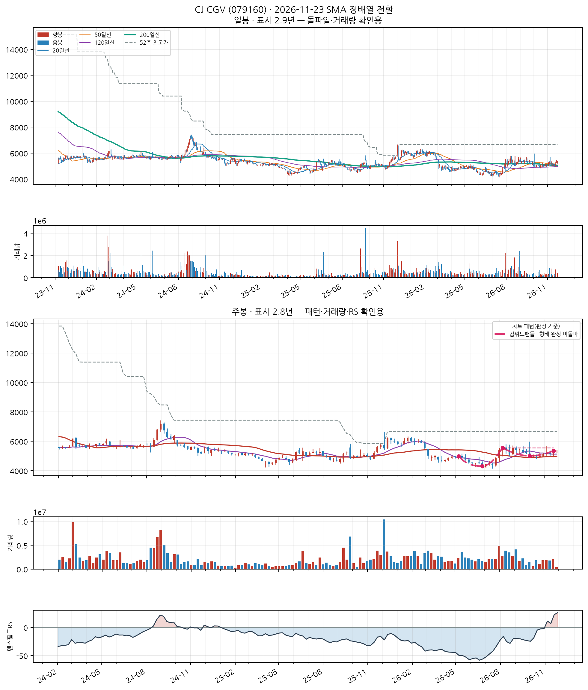

CJ CGV (079160)
신규 KOSPI영화, 비디오물, 방송프로그램 제작 및 배급업
업종 참고: RS 평균 68/99(업종 중 상위 21%) · 오늘 신호 2건 · 업종 평균이 코스닥 대비 +34.6%p(126일), 종목별 편차 ±27%p
🧪 자체 섹터 분류(실험적, 참고용): CJ CGV·LG생활건강 등 4종목 (업종 혼재)
섹터 내 RS 순위: 1/4위 (RS 92/99)
섹터 1~3위: CJ CGV(92), LG생활건강(83), LG생활건강우(73)
※ 자체 상관관계 계산(최근 1년) — 검증 시 기준업종 11개 중 8개 정확. 주 단위로 구성종목이 일부 바뀔 수 있음(주간 일치도 실측 0.53)
섹터 내 RS 순위: 1/4위 (RS 92/99)
섹터 1~3위: CJ CGV(92), LG생활건강(83), LG생활건강우(73)
※ 자체 상관관계 계산(최근 1년) — 검증 시 기준업종 11개 중 8개 정확. 주 단위로 구성종목이 일부 바뀔 수 있음(주간 일치도 실측 0.53)
종가 5,290 · 거래대금 23억
정배열 1일차거래량비 1.1x정배열 후 +0.0%
손절 4,867 | 목표 6,560 | 수량 1,890주

📐 컵위드핸들 · 형태 완성·미돌파
📐 차트 패턴 판정: 컵위드핸들 형태 완성·미돌파 확신 중간 판정 기준(PDF)
컵(13주·깊이 22.5%)+핸들 형태는 있으나 피벗 5,560를 아직 넘지 못했다.
가장 강한 반증 선행 추세: 선행 상승 +3.6% — +20%에 못 미침
경쟁 후보·더 단순한 설명 없음
측정표 (주봉 종가 기준, 판정일 2026-11-23 이후 데이터 미사용)
| 선행 추세 | 2025-11-07→2026-05-08 +3.6% (26주) |
|---|---|
| 시작일·종료일 | 2026-05-08(왼쪽 림) ~ 2026-08-07(오른쪽 림) |
| 핵심 피벗 | 왼쪽 림 2026-05-08 4,990 · 저점 2026-06-26 4,310 · 오른쪽 림 2026-08-07 5,560 |
| 전체 기간 | 컵 13주 |
| 깊이 | 컵 22.5% = 1 − 4,310 ÷ 5,560 |
| 대칭·허용오차 | 림 차이 10.3%(허용 12%) · raw 저점 위치 54% · 바닥 중심 54% · V/U 치우침 +0.126 |
| 거래량 변화(베이스) | 컵 구간 평균 거래량은 직전 13주의 0.99배 |
| 핸들 | 2026-08-07~2026-10-02 8주 · 저점 5,010 · 깊이 9.9% |
| 피벗/넥라인 | 핸들 고점 5,560 (종가 기준) |
| 현재가와 확인선 거리 | 현재가 5,360 vs 피벗 5,560 → -3.6% |
| 진행 중 주(미완결) | 2026-11-23 기준(그 주 1봉, 미완결) 종가 5,290 — 피벗·돌파·상태 판정에 쓰지 않음 |
조건별 판정
- 부분충족 선행 추세 — 선행 상승 +3.6% — +20%에 못 미침
- 충족 기간 — 컵 13주 (기준 7~65주)
- 충족 깊이 — 컵 깊이 22.5% (기준 12%~33%)
- 충족 림 대칭 — 좌우 림 차이 10.3% ≤ 12%
- 충족 U자 모양 — 바닥 형태(3주 중앙값 평활): 직선 V 템플릿 오차 0.271 vs 포물선 U 템플릿 오차 0.145 → 치우침 +0.126 (V=−0.167·U=+0.167, 기각 ≤-0.05·충족 ≥+0.05) · 바닥 중심 위치 54%
- 충족 베이스 거래량 수축 — 컵 구간 평균 = 직전 13주 평균의 0.99배
- 충족 핸들 — 핸들 8주·깊이 9.9% (기준 ≤15%, 컵 깊이의 절반 이하)
- 부분충족 핸들 거래량 수축 — 핸들 평균 = 컵 구간 평균의 1.08배
- 충족 최근성 — 마지막 구조 피벗(2026-10-02)이 7주 전
- 미충족 피벗 돌파 — 종가가 아직 확인선 위로 안 올라옴(-3.6%)
- 판정불가 돌파 거래량 — 돌파 전
추가로 필요한 데이터 장중 고저 기준 깊이(여기 수치는 주봉 종가 기준) · 이번 주 완결 주봉(2026-11-27 라벨) — 미완결이라 판정에서 제외
패턴만으로 매수 추천이나 목표 달성 확률을 만들지 않습니다. 수치 기준은 잠정치이며 라벨 데이터로 검증되지 않았습니다.
C
C — 분기 실적 성장 우수
2026 3분기보고서(누적) · 순이익 흑자전환(+nan억원→+372억원) · 매출 흑자전환(+nan억원→+6,881억원)
DART 공시 기준 · 분기 단독 전년동기 대비 · 직전 분기보다 성장률이 높아짐(가속) · EPS 데이터가 없어 순이익·매출로만 판정 — 자사주 매입 착시를 거르지 못함
A
A — 연간 실적 성장 데이터 없음
데이터 없음 — DART 조회 실패 또는 사업보고서 없음 (DART_API_KEY 필요)
N
N — 신고가·모멘텀 데이터 없음
신고가 데이터 없음
S
S — 수급(거래량) 양호
20일 평균 대비 1.14배
유통주식수·순매수 데이터는 미보유 (거래량으로만 근사)
L
L — 주도주(상대강도) 우수
RS 등급 92/99 (126거래일 ≈ 6개월 기준 · 유니버스 1000종목 중 백분위) · 지수대비 +60.5%p
상위 시가총액 유니버스 기준 — KRX 전체 대비 백분위 아님 · 오닐의 RS Rating은 52주 기준이지만 여기는 126거래일로, 같은 리포트의 6개월 모멘텀과 기간을 맞춘 값이다(원전과 다름)
I
I — 기관·외국인 수급 양호
20일 순매수 +19.97% (거래대금 대비) · 최근절반 +19.76% vs 이전절반 +20.14% (약화) · 순매수 15일 · 누적 +78.1억원
**오닐의 I(기관 보유 종목 수의 증가)가 아니라 단기 순매수 흐름**을 쓴 대용값이다 — 보유 기관 수는 국내에 공개 데이터가 없다 · 한국투자증권 공식 API(KIS) 기준 · 기관+외국인 합산, 기타법인 제외로 거래대금은 소폭 과소추정 · 임계값은 아직 실측 검증 전 잠정치 — 수급 이력이 쌓이면 다른 지표와 같은 방식으로 구분력을 측정해 조정 예정 · 최근 유입이 이전보다 약해져 한 단계 낮춤
M
M — 시장방향 미흡
KOSPI 지수가 60일선 아래
**오닐의 M(분산일·추종일 계수)이 아니라 지수의 이동평균 상회 여부**를 쓴 대용값이다 · 실제 매매 필터로는 미적용(표시 전용) — 종목 선별보다 지수 자체 타이밍이 더 효율적이라는 자체 검증 결과 있음 (reports/vs_kospi.md)